Set up and run a heliocentric trajectory simulation with two objects.
Simulation in the gravity field of the Earth, moon, and sun. The spaceraft and asteroid are both treated as objects in the simulation. Both objects use GravityHelio as their default gravity function. The moon is treated as a point mass unless the gravitational harmonics are included in the data structure.
In this demo the thrust vector is always along the Earth relative velocity vector.
See also ForceSimple, PlanetPosJPL, RHSTrajectory, RK4, Plot2D, HelioPlot, GravityHelio
Contents
%-------------------------------------------------------------------------- % Copyright (c) 2017 Princeton Satellite Systems, Inc. % All rights reserved. %-------------------------------------------------------------------------- % Since 2017.1 %--------------------------------------------------------------------------
User inputs
nDays = 80; dT = 1000; % sec - 2*pi/T must be 10x higher than % the highest harmonic in the system planets = [3 10]; % Earth and Moon % Constants secInDay = 86400; daysInYr = 365.25;
Initialization
tEnd = nDays*secInDay; n = floor(tEnd/dT); t = (0:n-1)*dT; % Initialize the data structure d = RHSTrajectory; d.jD0 = 2457504.5; % Initial date matching the asteroid state d.planetID = planets; % Object 1 is the spaceraft d.object(1).mass = 12; % Object 2 is the asteroid d.object(2).mass = 5e5; % Display structure data for user StructToText(d); % Initialize the JPL ephemerides PlanetPosJPL( 'initialize', planets ); [rP,~,vP] = PlanetPosJPL('update', d.jD0); % Asteroid state from JPL Horizons http://ssd.jpl.nasa.gov/horizons.cgi#top xA = [ -8.560701547109835E+07; -1.235220355296940E+08; -5.230886882986473E+07;... 2.336703121935733E+01; -1.445256411364323E+01; -7.005471702678194E+00]; % Spacecraft position and velocity at separation % For demo purposes, place the spacecraft in GEO orbit [rO,vO] = El2RV([42000;0;0;0;0;0]); xS = [ rP(:,1)+rO;... % Position (km) vP(:,1)+vO]; % Velocity (km/s) x = [xS;xA]; % Initialize the state and auxiliary names RHSTrajectory( x );
object: STRUCTURE ARRAY object(1).forceModel: STRUCTURE object(1).forceModel.fun: ForceSimple object(1).forceModel.data: STRUCTURE object(1).forceModel.data.uThrustECI (3,1): 1.000000 0.000000 0.000000 object(1).forceModel.data.thrustMag: 0.01 object(1).mass: 12 object(1).gravity: STRUCTURE object(1).gravity.fun: GravityHelio object(1).gravity.data: STRUCTURE object(1).gravity.data.muSun: 1.32712e+11 object(1).gravity.data.sphHarmMoon: [] object(1).gravity.data.moonId: 2 object(1).cM (3,1): 0.000000 0.000000 0.000000 object(2).forceModel: STRUCTURE object(2).forceModel.fun: NoForce object(2).forceModel.data: [] object(2).mass: 500000 object(2).gravity: STRUCTURE object(2).gravity.fun: GravityHelio object(2).gravity.data: STRUCTURE object(2).gravity.data.muSun: 1.32712e+11 object(2).gravity.data.sphHarmMoon: [] object(2).gravity.data.moonId: 2 object(2).cM (3,1): 0.000000 0.000000 0.000000 planetID (1,2): 3.000000 10.000000 mu: 1.32712e+11 jD0: 2.4575e+06
Run the simulation
n = length(t); p = zeros(24,n); jD = d.jD0 + t/86400; for k = 1:n [~,f] = RHSTrajectory(x,t(k),d); p(:,k) = [x;f.aux]; [~,~,vP] = PlanetPosJPL('update', jD(k)); d.uThrustECI = Unit(x(4:6)-vP(:,1)); x = RK4(@RHSTrajectory,x,dT,t(k),d); end
Plot results
[tt, tL] = TimeLabl( t ); k = 1:3; Plot2D( tt, p(k,:), tL, f.stateNames(k), 'Position Spacecraft'); k = k + 3; Plot2D( tt, p(k,:), tL, f.stateNames(k), 'Velocity Spacecraft'); k = k + 3; Plot2D( tt, p(k,:), tL, f.stateNames(k), 'Position Asteroid'); k = k + 3; Plot2D( tt, p(k,:), tL, f.stateNames(k), 'Velocity Asteroid'); k = k + 3; Plot2D( tt, p(k,:), tL, f.auxNames(1:3), 'Force'); pName = {'Spacecraft' '1991 VG'}; HelioPlot( d.planetID, nDays/365, d.jD0, p([1:3 7:9],:), pName ) % If the moon is important, plot in various Moon frames rSEMR = SEMIToSEMR( jD, p(1:3,:), p(4:6,:) ); PlotSEMTraj( rSEMR, 'SEMR', jD ); r_Earth = p(1:3,:) - p(19:21,:); r_Moon = p(1:3,:) - p(22:24,:); r_ast = p(1:3,:) - p( 7: 9,:); EarthMoonRotFrame( r_Earth, jD, [5 5] ); EarthMoon( r_Earth, jD, [5 5] ); Plot2D(tt, [Mag(r_Earth);Mag(r_Moon);Mag(r_ast)], tL, 'Distance','Distance to Planetary Bodies' ); legend('Earth','Moon','1991 VG') Figui; %-------------------------------------------------------------------------- % $Id: c26b4bd0a8a2e613596db2d39463e995b876b835 $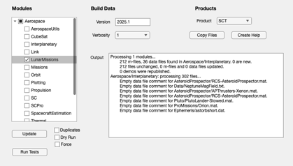 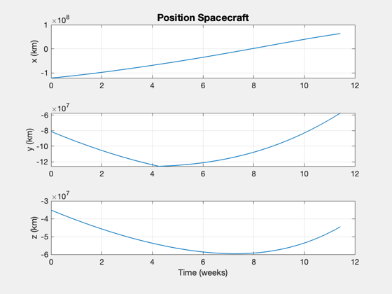
 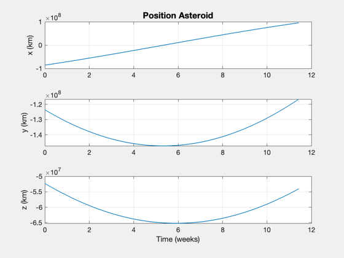 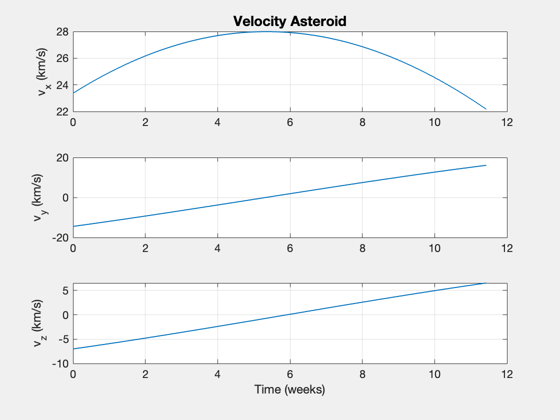 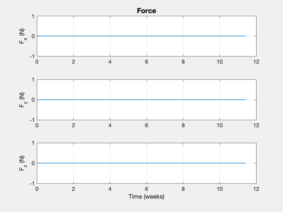 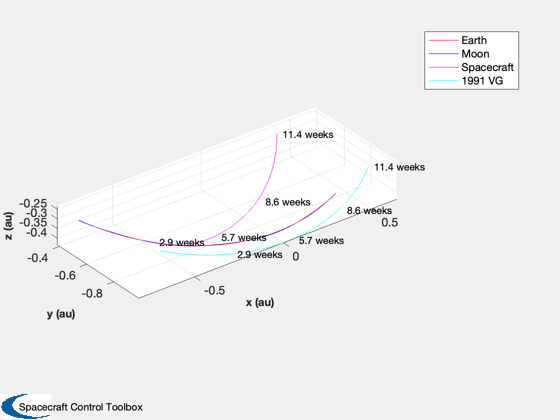 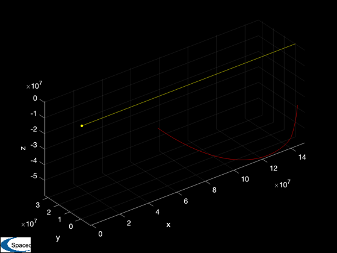 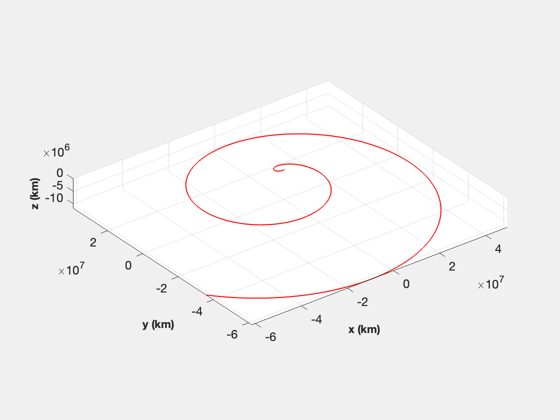 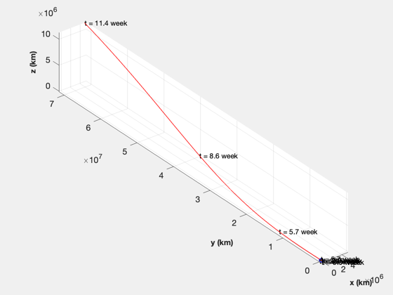 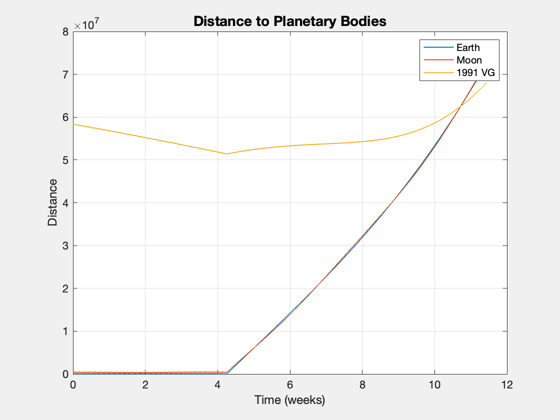 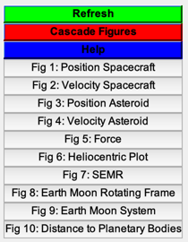
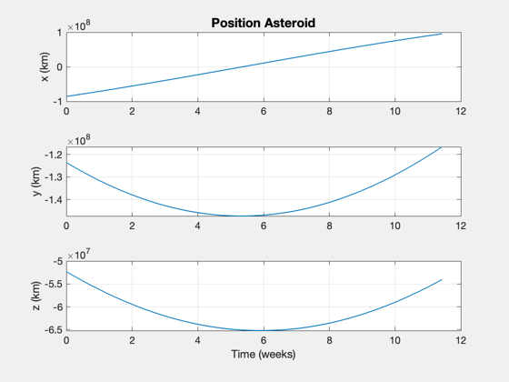 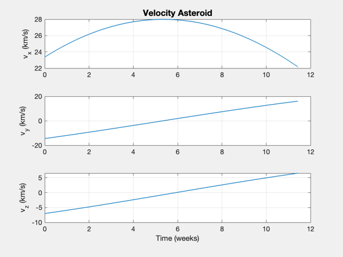 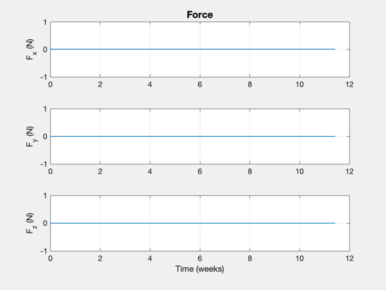 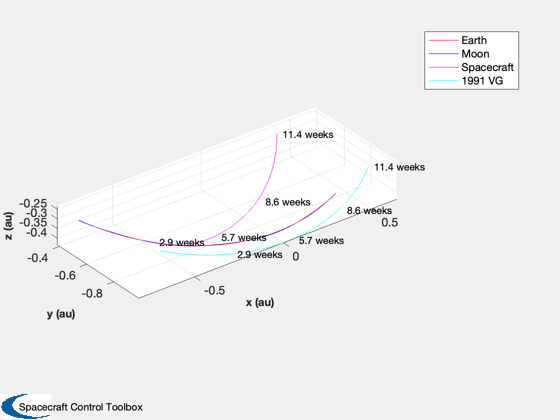 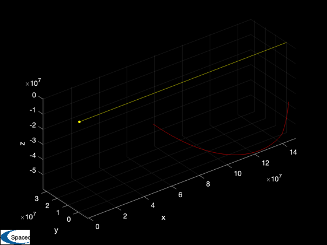 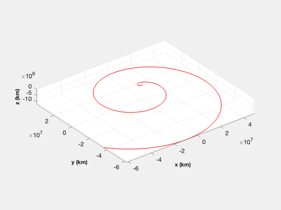 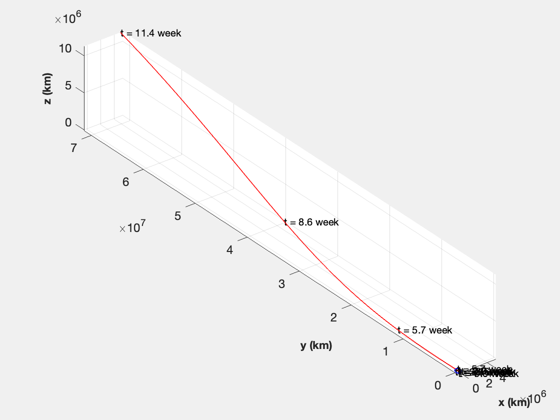 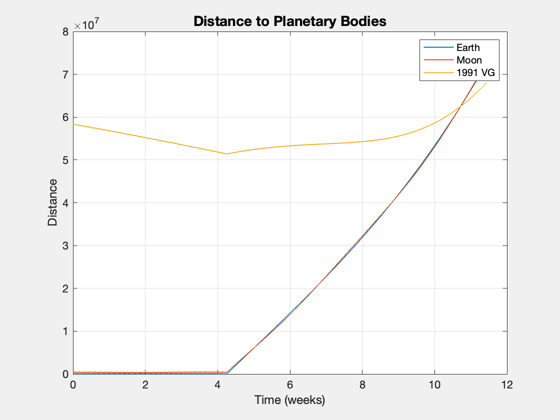 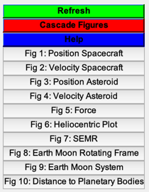